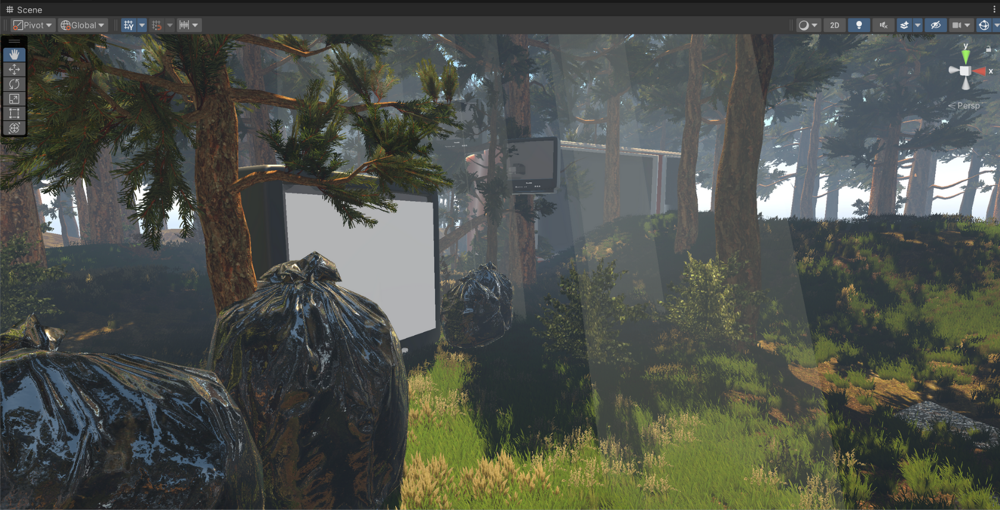

Digital Waste
Overview: Digital Waste is a virtual reality project of a forest enveloped in a hazy atmosphere. But scattered throughout the forest terrain are piles of trash and old televisions. These devices play videos depicting the harsh realities of the climate crisis, including forest fires and other environmental challenges.
Concept
User Exploration: Walk around the forest, bask in the nature and then encounter the e-waste.
Interaction: Approaching one of the televisions, and a clip related to the climate crisis is played on screen.
Our Goal: Inviting users to contemplate the relationship between nature and technology. Challenges us to consider the impact of human consumption on the natural world
Inspiration
Artist Nam June Paik, who actively embraced television and video as artisitic mediums. His art installation "TV Garden", blends nature and technology, with several televisions amongst live plants.

Project Development
Once the concept was established we worked on developing the scene in Unity. My role specifically was creating the terrain, natural environment as well as atmosphere. My other teammates worked on adding the televisions, trashbags and implementing the mechanism for a video to play when the user arrives at a certain distance from a television screen.
